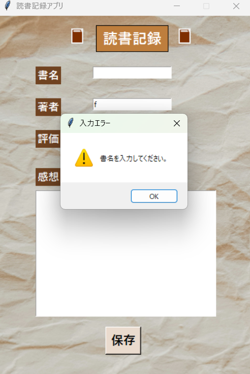
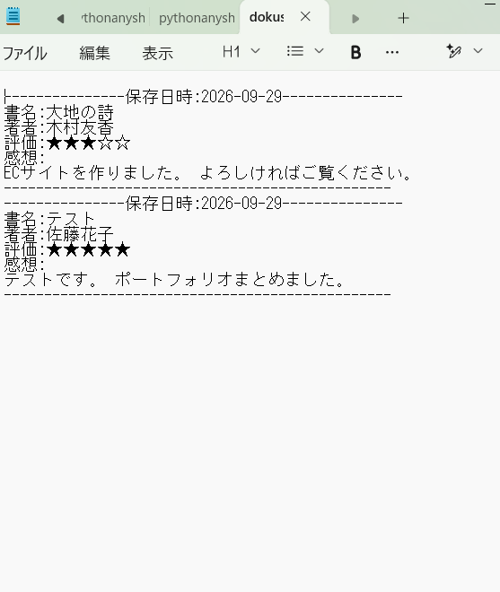

FEATURE 01
読書記録の入力
書名と著者を入力し、プルダウンから5段階の星評価を選択できます。感想欄には複数行の文章を入力できます。
- 書名・著者の入力欄
- ttk.Comboboxによる星評価の選択
- 複数行の感想入力
01 / OVERVIEW
職業訓練の初期に、Pythonの基礎学習の一環として制作した読書記録アプリです。 Tkinterを用いたGUIの部品配置やイベント処理、 ファイルの読み書きなど、学習した内容を組み合わせて制作しました。
書名・著者・5段階の評価・感想を入力し、 保存ボタンを押すと日付付きでテキストファイルに追記されます。 また、入力漏れを防ぐメッセージ表示にも対応しています。
02 / FEATURE DETAILS
実際の画面と、実装した操作を紹介します。
FEATURE 01
書名と著者を入力し、プルダウンから5段階の星評価を選択できます。感想欄には複数行の文章を入力できます。

FEATURE 02
書名や星評価が未入力の場合は警告を表示して保存を中止します。感想が空欄の場合は、保存するかどうかを確認するダイアログを表示します。

FEATURE 03
保存日時・書名・著者・評価・感想を dokusyo.txt に追記します。長い感想は textwrap を使って折り返し、記録を読みやすくしています。
datetime で保存日を記録03 / VIDEO
ブラウザ上では直接操作できないため、アプリの動作を動画で紹介します。
収録例：入力 → 入力チェック → 保存 → テキストファイル確認。
04 / DEVELOPMENT
未入力項目に応じて警告または確認ダイアログを表示し、入力内容を確認してから保存できるようにしました。
保存時に日付と各項目の見出しを付け、感想の長文は折り返してテキストファイルに追記しています。
Pillowで背景や本のアイコンを表示し、文字色や配置を調整して入力しやすい画面を目指しました。
保存後は書名・著者・感想を消去し、星評価も初期値に戻して続けて記録できるようにしました。